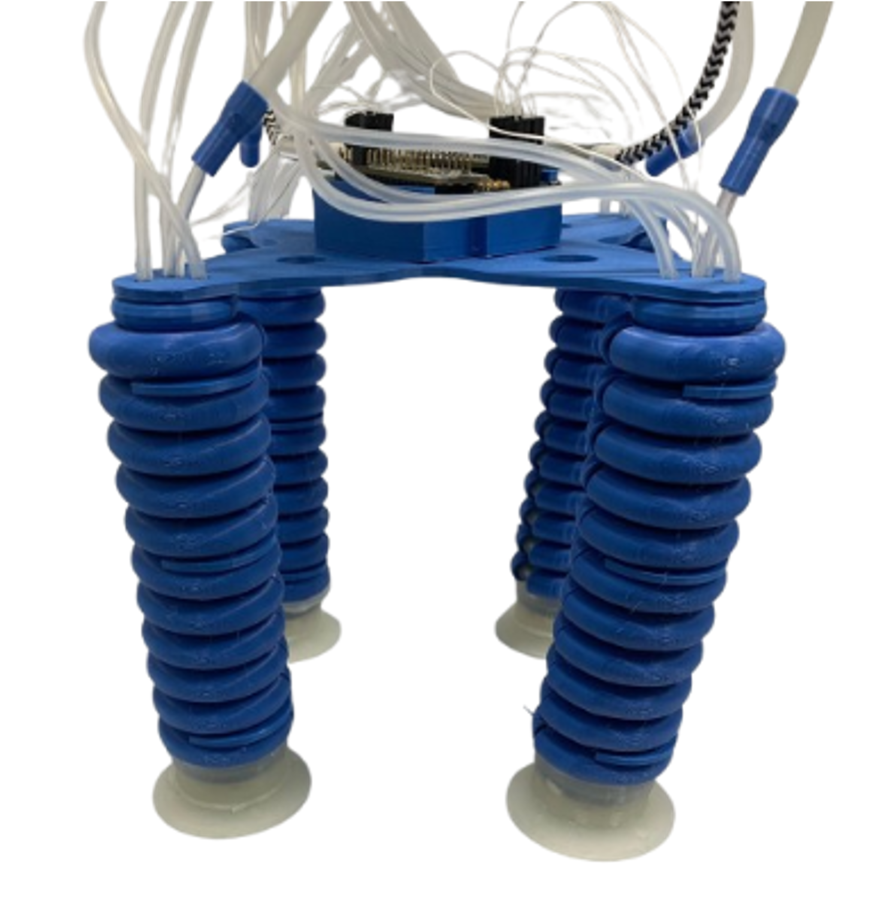
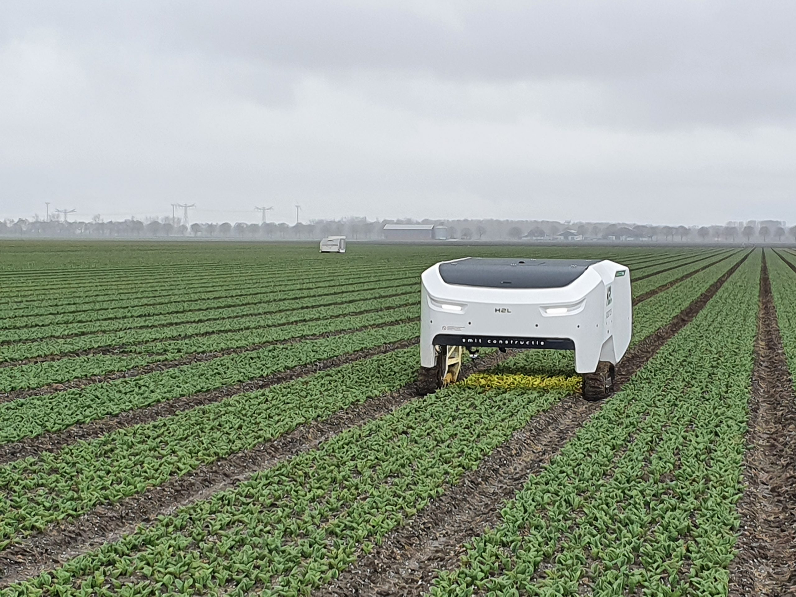

Project MARCH
Mechanical design of exoskeleton joints under tight deadlines in a large multidisciplinary team.
Mechanical Engineer · Robotics · Hardware Development
I'm a mechanical engineer with an MSc from TU Delft (Cum Laude), interested in the design and development of robotic systems. My work spans mechanical design, prototyping and manufacturing, sensor integration, and robot control. I've worked on projects ranging from a powered medical exoskeleton to a pneumatically actuated soft quadruped robot. After graduating, I gained industry experience at H2L Robotics, where I worked on commissioning robotic systems, building prototypes and troubleshooting hardware in the field. I enjoy working across disciplines and getting involved in the entire development process, from an initial concept to a working robotic system. I'm particularly interested in unconventional robotic systems, where mechanical design, sensing and control come together.
Mechanical design of exoskeleton joints under tight deadlines in a large multidisciplinary team.

Design, sensing and control of a pneumatically actuated soft quadruped robot with tactile suction cup feet.

User-centered design of a handheld assistive device, iterated based on user feedback.

Commissioning, testing and troubleshooting agricultural robotic systems, with field support for more than 100 growers.
Email: storm@pdekam.nl